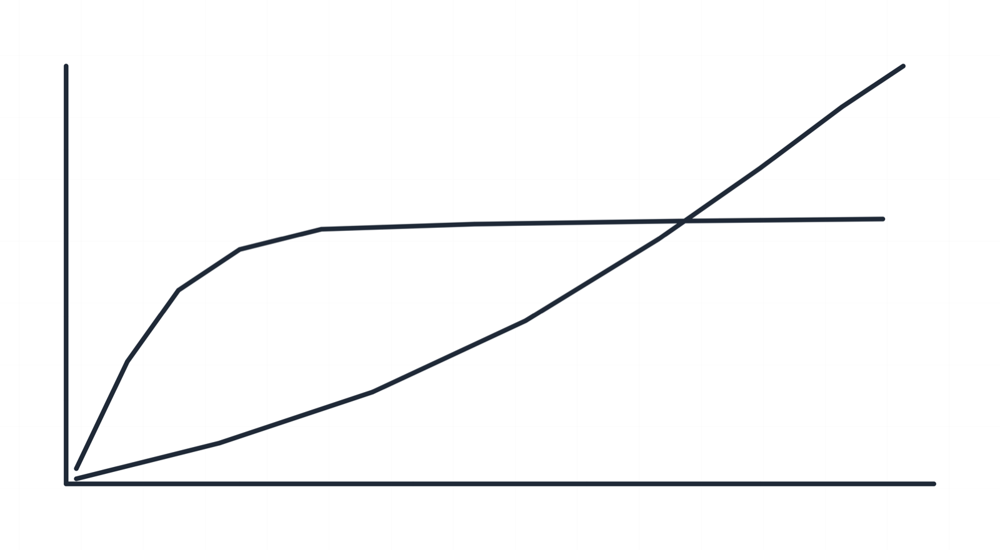

allin-anything · Chain 06 artifact · FM-os reading list №1 → master-anything sessions → animate-anything motion → penecho ink
The Bitter Lesson, learned all-in style
Seventy years, one repeating story
Key idea. The biggest lesson of AI research: general methods that leverage computation — search and learning — consistently beat methods built from human domain knowledge. Not once; every time the hardware catches up.
Operational mechanism. In chess, Go, speech, and vision the same sequence played out: hand-crafted knowledge wins early benchmarks → compute-hungry general methods look wasteful → compute gets cheap → the general method blows past the plateau. The animation replays that overtake per field.
heuristics → search
patterns → self-play
phonemes → learning
features → CNNs
grey = human-knowledge methods · orange = general methods + compute, arriving later and going higher
The plateau and the line that crosses it
Key idea. Human-intuition methods rise fast and flatten: their ceiling is the knowledge we managed to encode. Compute-leveraged methods start lower, but their ceiling is the hardware curve — and the hardware curve doesn't flatten.
Operational mechanism. This figure was drawn as real ink on penecho's canvas (the family's pen→digital bridge, run upstream at pinned e1b936f, its own 200 tests green) and exported by penecho's own PNG exporter — the same bridge Chain 02 proved for floor plans, now carrying an idea instead of a wall:

real strokes, penecho's renderer and exporter — the digital↔physical bridge of this super-repo, working
the same figure as motion: the grey curve saturates; the orange one is still accelerating when the frame ends
Search and learning: the only two methods that scale
Key idea. Why these two? Because both convert more compute directly into more capability with no human in the loop: search explores more branches; learning fits richer functions from more data.
Operational mechanism. Left: a search tree popping wider as budget grows. Right: gradient descent rolling to a minimum — no one tells the ball where the bottom is; the slope does.
search widens with budget (blue) · learning descends the loss surface (orange)
Why human priors become a ceiling
Key idea. Encoding “how we think we think” — symmetries, features, grammar rules — buys early wins and then caps the system at the limits of our own introspection. The contents of minds are “irredeemably complex”; the shortcut becomes the wall.
Operational mechanism. Two learners: one grows inside the box of human priors and hits its lid; one grows against compute alone and keeps going. The box IS the plateau from Session 2.
blue learner: capped by the prior-box · orange learner: capped only by compute
- Pattern: bet on compute — invest in algorithms that improve as compute increases.
- Anti-pattern: human-centric priors — “teaching” the model our logic limits its ultimate ceiling.
What to do differently tomorrow
Key idea. The bitter part is that the lesson keeps having to be re-learned — each generation believes its domain knowledge is the exception. The actionable discipline: build methods that get better when the budget doubles, and resist over-engineering that only helps at today's budget.
Operational mechanism. Compounding: every doubling multiplies the same general method, while hand-tuned gains are one-time. The dot below gains size (capability) as it rides the budget curve.
general methods compound with the budget; hand-tuned tricks are flat one-offs
- Prioritize scalability — prefer the algorithm that wins at 10× compute over the one that wins today.
- Avoid over-engineering — let the model discover structure instead of hard-coding your version of it.
Sources & provenance: Sutton's original essay (link above, verified) and the FM-os reading-list entry (Statement / Essential Quote / Evidence / Actions / Patterns / 1st-Principle format, links curl-verified at intake 2026-07-30). The session structure follows master-anything's teach-back discipline; the animations follow animate-anything's craft rules (one idea per beat, morph-to-equivalence, narrative arc, prefers-reduced-motion respected); the hand-drawn figure is real penecho ink at pin e1b936f.
allin-anything · Chain 06 (article → animated understanding) · router verdict: penecho + animate-anything + master-anything, all 🟢 · Paul Jialiang Wu · agentic-portfolio-lovat.vercel.app